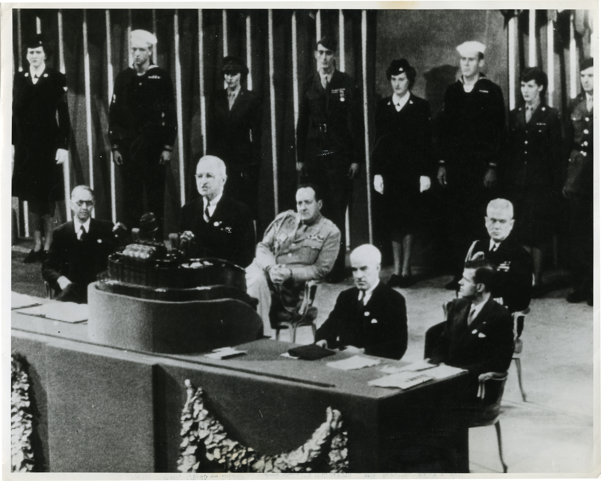

Post War
Costs of the War
World War II was the deadliest war in human history. It resulted in the deaths of 50 million military personnel and civilians across the world. Approximately 300,000 Americans died out of the 15 million in uniform during the war. 800,000 Americans were left wounded. The United States faced over $258 billion in debt. Other nations suffered even more. The Soviet Union experienced the most casualties, ranging from 22-27 million. Nations like France were completely destroyed during German occupation.
Returning service members faced fears about finding homes and jobs, even though the economy was improving. Per-capita income for Americans increased during the war years. The GI Bill helped transition GIs (men and women who served) back into civilian life, allowing them to continue their education at government expense. Suburban communities were built to provide affordable homes. Levittown, on Long Island, New York, offered 17,000 mass-produced, low-cost homes. Many middle-class Americans became suburbanites.
United Nations
The founding of the U.N. aimed to maintain peace and protect equal rights for all people. The Senate approved the charter, ratified by 29 nations. The five major Allied powers (U.S., G.B., France, China, and the Soviet Union) had a permanent seat at the table. The U.S. proposed the Baruch Plan to regulate nuclear energy and eliminate atomic weapons, but the Soviets rejected it, showing they were not committed to peace. They also declined to participate in the International Bank for Reconstruction and Development.
Hostility emerged as the Soviets remained in occupied countries in Eastern Europe. Russia sought to expand its influence and control Eastern Europe, which the U.S. and Great Britain saw as a violation of self-determination.

Soviet-U.S. Tensions
The temporary alliance between the U.S.S.R. and the United States ended. Poor relations reemerged between these two powers. Stalin complained about the U.S. and Britain for delaying the opening of the second front in France. The Soviet Union also suffered half the war deaths. At Potsdam, conflicts arose over post-war negotiations. During the war, FDR tried to cooperate with Stalin. When Truman became president, he questioned whether the U.S. could trust the Soviet Union. These tensions eventually led to the Cold War and the threat of nuclear war.
With Yalta dividing Germany into four occupation zones, the Soviets attempted to make the eastern zone a communist state and pressured the democratic sectors to leave in order to tighten control over East Germany. The U.S. and Great Britain grew frustrated with “babying the Soviets” (Truman quote). Churchill delivered his “Iron Curtain” speech, calling for democracies to contain the expansion of communism.
Popular Culture / Economy
While the Cold War lingered in the background, the 1950s were prosperous in the United States. Television became common among American families. Viewers watched situation comedies, westerns, quiz shows, and sports. Critics, including FCC chairman Newton Minnow, worried about the impact on children watching five or more hours a day. Americans also read more than ever. Novels in the 1950s explored individual struggles against conformity. Jack Kerouac wrote On the Road in 1957, describing the life of “Beatniks.” Allen Ginsberg wrote the poem “Howl,” reflecting youth rebellion against social norms. Teenagers embraced rock and roll, African American blues, and white country music. Elvis Presley emerged as a major music icon. Social reform and counterculture movements grew in the 1960s.
Corporate America dominated the economy. More workers held white-collar jobs than blue-collar jobs for the first time in history. Organizations promoted teamwork and conformity. The decades from 1945-1980 defined the golden age of corporate America.